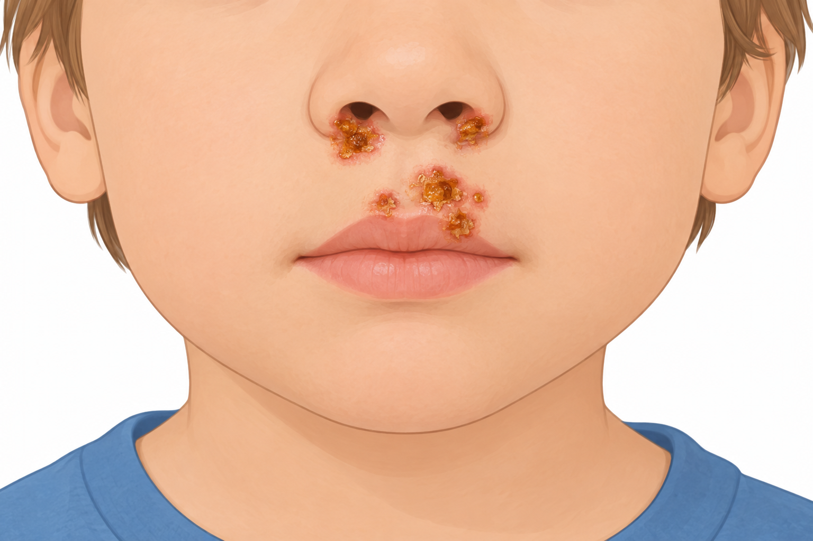
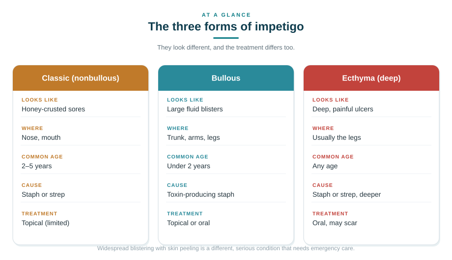
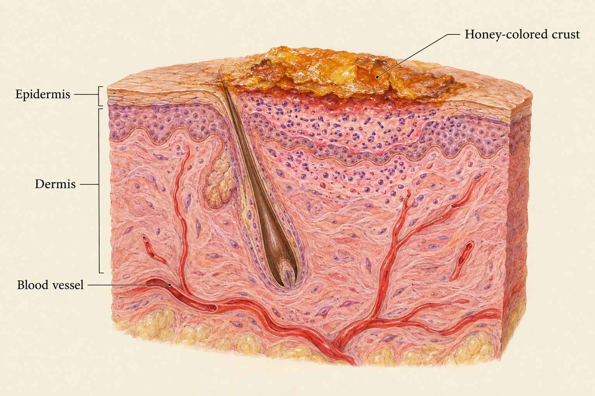
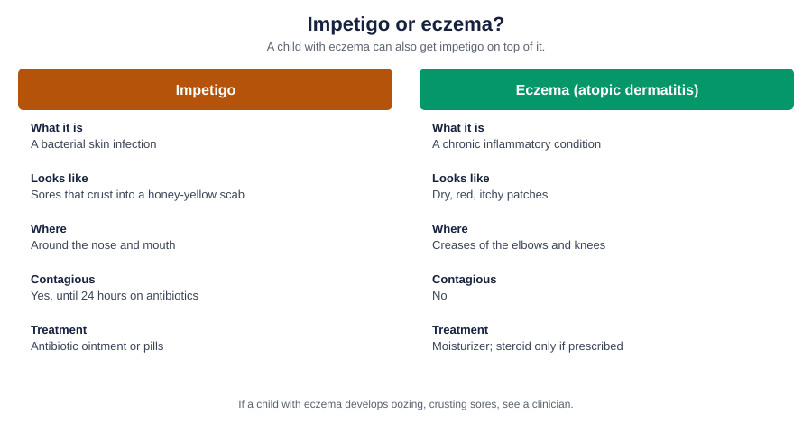
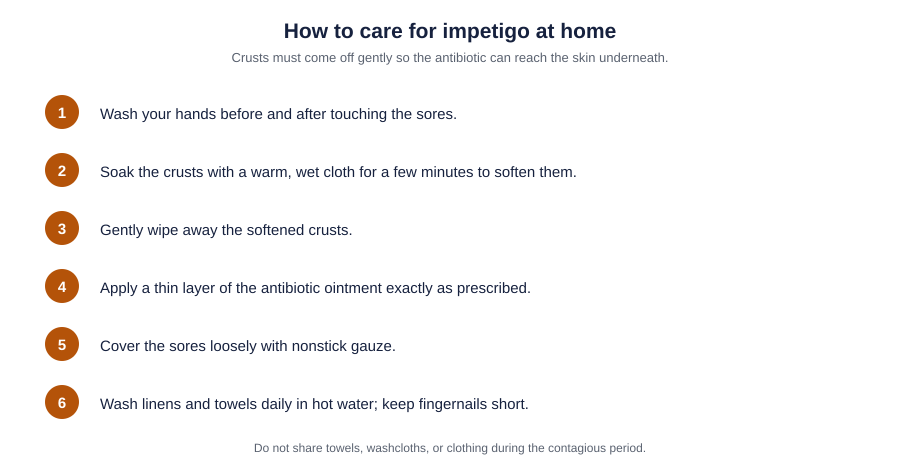

Key Takeaways
- Impetigo is the most common bacterial skin infection in young children, caused by Staphylococcus aureus and/or Group A Streptococcus, peaking between ages 2 and 5.
- Localized disease clears with a 5-day topical antibiotic (mupirocin, retapamulin, or ozenoxacin); widespread or deep infection needs 7 to 10 days of oral antibiotics.
- First-line oral treatment for methicillin-susceptible disease is cephalexin or dicloxacillin; suspected MRSA shifts to clindamycin, trimethoprim-sulfamethoxazole, or doxycycline (age 8+).
- Children can return to school or daycare 24 hours after starting effective antibiotics, with sores covered.
- The two things not to miss: MRSA, and in a child with eczema, eczema herpeticum; both change management and may need in-person care.

Impetigo is one of those childhood rashes that looks worse than it is. A few honey-colored crusts around a child's nose can alarm any parent, but with the right antibiotic it usually clears within a week. Here is what it actually is, when it needs treatment, and when it is something more serious.
When to Get Emergency Care
Take a child to a pediatric emergency department or urgent in-person evaluation for any of these:
Any age (age-independent red flags)
- Fever with rapidly spreading redness, warmth, or streaking beyond the sore borders (concern for cellulitis or invasive Group A strep)
- Widespread fragile blistering with skin sloughing or a "wrinkled paper" appearance (concern for Staphylococcal scalded skin syndrome, SSSS) ([1])
- Grouped vesicles or "punched-out" erosions in a child with eczema, especially with fever or malaise (concern for eczema herpeticum, a dermatologic emergency)
- Painful, deep ulcers rather than superficial crusted sores (possible ecthyma)
- Any child with an underlying immune deficiency
- Facial swelling that involves the eye or crosses to the other side of the face
Newborns (0 to 28 days)
Any suspected skin infection in a newborn should be evaluated in person, urgently. Neonatal S. aureus skin infection can progress rapidly and neonates are at higher risk for SSSS because of reduced renal toxin clearance ([1]).
Infants under 3 months
Any fever plus a skin infection warrants same-day pediatric evaluation, not telehealth.
Symptoms: What an Impetigo Rash Looks Like
Impetigo is a bacterial skin rash. Parents often search for "impetigo rash" because that is what the visible change is: a rash made of sores that crust over. It has three forms, and each looks different:
Classic (nonbullous) impetigo: 70% of cases
The most common form. Small red bumps or blisters appear, usually around the nose and mouth, sometimes on hands, feet, or scalp. Within a few days the lesions rupture and dry into the characteristic honey-colored (yellow-brown) crust ([7]; [1]). Itching and soreness are usually mild. Lesions can spread to other body areas by touch or shared items.
Bullous impetigo
Larger, thin-walled fluid-filled blisters that rupture easily, most often on the trunk, arms, legs, or diaper area. This form is caused by toxin-producing S. aureus strains. Over 90% of cases occur in children younger than 2 ([7]).
Ecthyma
A deeper, more serious form that penetrates below the surface of the skin and produces painful, punched-out ulcers with an overlying crust. Can leave scars. Always requires oral antibiotics ([2]; [5]).

The three forms at a glance
| Classic (nonbullous) | Bullous | Ecthyma (deep) | |
|---|---|---|---|
| Looks | Honey-crusted sores | Large fluid blisters | Deep, painful ulcers |
| Where | Nose, mouth | Trunk, arms, legs | Usually the legs |
| Common age | 2–5 years | Under 2 years | Any age |
| Cause | Staph or strep | Toxin-producing staph | Staph or strep, deeper |
| Treatment | Topical if limited | Topical or oral | Oral always |
| Scarring | Rare | Rare | Common |
Causes and How It Spreads
Two bacteria cause almost all impetigo:
- Staphylococcus aureus (staph), the most common cause, including community-acquired MRSA in some regions
- Group A Streptococcus (strep, S. pyogenes)
Both organisms can be present together. Bacteria enter the skin through a break (a scratch, insect bite, eczema patch, or a small cut), but impetigo can also develop on skin that looks intact ([7]; [4]).
Close contact is the single most common risk factor. It spreads readily in daycares, schools, sports involving skin-to-skin contact, and within households ([4]).

Age epidemiology
- Nonbullous impetigo: most common between ages 2 and 5, and accounts for about 10% of pediatric skin conditions overall ([7])
- Bullous impetigo: over 90% of cases occur in children younger than 2 ([7])
- Older children and adolescents also develop impetigo, particularly athletes in contact sports
Higher-risk groups
Children with eczema, scabies, or other skin conditions that disrupt the barrier; children in crowded settings (daycare, shelters, military housing); athletes in contact sports (wrestling, football); children in hot, humid climates ([4]; [5]).
Impetigo vs Eczema: How to Tell Them Apart

Parents often confuse the two because both show up as a rash in young children, and a child with eczema is actually more likely to develop impetigo because the broken skin barrier lets bacteria in ([5]).
- Impetigo is an infection. It appears as sores that open and crust over with the telltale honey-colored scab, usually around the nose and mouth. It is contagious and clears with antibiotics.
- Eczema (atopic dermatitis) is a chronic inflammatory condition, not an infection. It appears as dry, red, itchy patches, often in the creases of the elbows and knees. It is not contagious and does not respond to antibiotics unless it has become secondarily infected.
The diagnostic question that matters: in a child with eczema, a sudden change from "itchy dry patches" to "oozing, crusting, or spreading sores" suggests impetigo on top of the eczema. That needs evaluation; if it looks like painful grouped blisters with punched-out erosions instead, consider eczema herpeticum, a dermatologic emergency ([1]).
When to See a Clinician
See a clinician within 24 hours:
- Suspected impetigo with a few well-defined sores, no fever, no rapid spread
- A honey-crusted lesion after a recent scratch or insect bite
- Confirmation that a rash a school or daycare has flagged is or is not impetigo
Escalate to in-person, same-day evaluation:
- Any red flag listed under "When to get emergency care"
- Child under age 5 (young children benefit from in-person evaluation)
- Widespread sores across multiple body regions
- Deep, painful, ulcerated lesions
- Facial lesions near the eye or on the eyelids
- Recurrent impetigo in the same child
- Any child with underlying immunosuppression
- Suspected MRSA (see risk factors below)
At a Glance: Where to Seek Care
| Situation | Where to go |
|---|---|
| Widespread blistering with skin peeling | Emergency department (possible SSSS) |
| Grouped blisters in a child with eczema, with fever | Emergency department (possible eczema herpeticum) |
| Fever with spreading redness or warmth beyond the sores | In person, same day (possible cellulitis) |
| Few crusted sores, no fever, age 5+, clear photographs | Telehealth or in-person visit |
| Under age 5, or cannot get a clear photograph | In person |
What's Changed in the Evidence
- The IDSA 2014 SSTI guideline remains the operative U.S. standard for impetigo treatment and has not been superseded.[2]
- Ozenoxacin (FDA-approved 2017) added a topical quinolone active against MRSA, labeled for patients 2 months and older, though head-to-head data against mupirocin remain limited.[3]
- The 2024 Pediatric Annals review reaffirms mupirocin as first-line for limited disease and specifically cautions against routine amoxicillin-clavulanate for impetigo because of its broad spectrum.[1]
- Erythromycin and other macrolides have moved off first-line because of rising staphylococcal resistance.[1]
Treatment
Treatment choice depends on how many sores, how deep, whether MRSA is likely, and disease severity ([2]; [1]).
Topical antibiotics (limited disease)
For a small number of lesions in one body area, the IDSA 2014 SSTI guideline recommends topical mupirocin or retapamulin twice daily for 5 days (strong recommendation, high-quality evidence). Ozenoxacin is a newer topical quinolone approved by the FDA for patients 2 months and older that is effective against both S. aureus (including MRSA) and S. pyogenes ([3]).
Topical mupirocin is as effective as oral erythromycin for limited disease and is the primary first-line option ([1]).
Before applying topical medicine: soften and gently remove crusts with a warm wet compress; the antibiotic works better when it reaches the underlying skin ([7]).
Oral antibiotics (extensive disease, ecthyma, or MRSA)
The IDSA 2014 guideline recommends oral therapy when there are numerous lesions, disease outbreaks, or ecthyma. Standard duration is 7 days ([2]); the 2024 Pediatric Annals review notes typical courses of 7 to 10 days ([1]).
Age-banded first-line oral options (methicillin-susceptible S. aureus)
| Agent | Pediatric dosing (ages 5+) | Notes |
|---|---|---|
| Cephalexin | 25 to 50 mg/kg/day divided every 6 to 8 hours (max 4 g/day) | First-line for MSSA per IDSA and Pediatric Annals |
| Dicloxacillin | 12.5 to 25 mg/kg/day divided every 6 hours | Also first-line for MSSA per IDSA |
| Amoxicillin-clavulanate | Weight-based dosing | Second-line per Pediatric Annals 2024, which cautions that broad-spectrum use should be limited |
Erythromycin and other macrolides are no longer first-line because of rising resistance in staphylococci ([1]).
Age-banded first-line oral options (suspected or confirmed MRSA)
| Agent | Pediatric dosing (ages 5+) | Notes |
|---|---|---|
| Clindamycin | 20 to 30 mg/kg/day divided every 6 to 8 hours | First-line for MRSA per IDSA and Pediatric Annals |
| Trimethoprim-sulfamethoxazole (TMP-SMX) | 8 to 12 mg/kg/day of TMP component divided every 12 hours | First-line for MRSA; check local resistance |
| Doxycycline | 2 to 4 mg/kg/day divided every 12 hours | Only in children age 8 and older per Pediatric Annals |
Weight-based dosing is a general primary-care reference. Specific choice, dose, and duration should always be individualized by the prescribing physician and cross-checked against the child's weight, allergies, and local antibiogram.
Wound care alongside antibiotics

- Cover sores loosely with nonstick gauze to reduce spread and scratching
- Wash hands thoroughly after applying topical medicine (use gloves for extensive lesions)
- Wash the child's clothes, bedding, and towels daily in hot water; keep separate from other household laundry
- Trim fingernails short to reduce autoinoculation from scratching
- Do not share towels, pillowcases, razors, or sports equipment during the contagious period
MRSA risk factors
Community-associated MRSA is a real consideration in impetigo. Any of the following supports empiric MRSA coverage or in-person culture ([2]; [1]):
- Prior MRSA infection in the child or a household member
- A recent skin abscess (in the child or a close contact)
- Contact sports (wrestling, football)
- A known outbreak in a school, team, daycare, or household
- Recurrent skin infection in the same location
- Recent hospitalization or antibiotic exposure
What This Costs (2026, Uninsured)
Generic mupirocin 2% ointment (22 g tube) retails around $38 to $45 cash, but discount coupons commonly bring it to roughly $10 to $12.[8] The oral options (cephalexin, clindamycin, trimethoprim-sulfamethoxazole, and doxycycline) are all inexpensive generics. Prices are for the medicine itself; they do not include a clinician visit or pharmacy dispensing fees.
When Can My Child Return to School or Daycare?
Children with impetigo are contagious until they have completed at least 24 hours of effective antibiotic treatment and either the sores are healing or can be completely covered ([4]; [6]).
Specific facility rules vary: some require the full 24 hours regardless of coverage; some accept covered sores earlier. Check your specific school or daycare policy. The 24-hour rule assumes an antibiotic to which the organism is susceptible; if the sores are not improving after 48 hours on antibiotic, the child needs re-evaluation.
Complications
Impetigo itself is usually mild. Complications are uncommon but include:
- Cellulitis: spreading redness, warmth, tenderness, sometimes fever. Requires oral antibiotics and often in-person evaluation
- Staphylococcal scalded skin syndrome (SSSS): a toxin-mediated illness with widespread fragile blistering and desquamation, primarily in young children. A dermatologic emergency ([1])
- Post-streptococcal glomerulonephritis: a kidney complication that can follow strep impetigo. Rare. Systemic antibiotics during known outbreaks are recommended in part to reduce this risk ([2])
- Eczema herpeticum: in children with atopic dermatitis, a rash that looks like impetigo may actually be disseminated herpes simplex. A dermatologic emergency requiring oral or IV acyclovir ([1])
- Scarring: most common with ecthyma; nonbullous impetigo usually heals without scars
Prevention
- Cover cuts, scrapes, insect bites, and eczema patches while they heal
- Wash hands regularly, especially after wound contact
- Do not share towels, sheets, razors, or sports gear during known outbreaks
- Wash contact-sport uniforms and equipment after every use
- Treat scabies promptly; it is a known impetigo risk factor ([4])
- Manage eczema well; children with atopic dermatitis have a substantially higher impetigo risk ([5])
Age-Specific Notes
Newborns (0 to 28 days)
Any suspected skin infection in a newborn requires urgent in-person evaluation. Neonatal S. aureus infection can progress rapidly and neonates are at high risk for SSSS. Telehealth is not appropriate.
Infants (1 to 12 months)
Bullous impetigo is most common in this age group. Any suspected impetigo in an infant should be evaluated in person by a pediatrician.
Toddlers and preschoolers (2 to 4 years)
This is the peak incidence group for classic impetigo. For this age, see a pediatrician in person.
School-age children (5 to 12 years)
Photograph-supported virtual evaluation can be appropriate for uncomplicated cases without red flags, though many families prefer in-person care for a first-time rash. Watch for outbreaks in schools and daycares; MRSA risk is elevated when close contacts have had skin abscesses.
Adolescents (13 to 17 years)
Contact-sport athletes are the highest-risk subgroup. Wrestlers and football players are more likely to encounter MRSA. Ask about team outbreaks and shared equipment.
About This Guide
This is general medical education, not a substitute for care from a pediatrician or other clinician who has examined your child. It is reviewed by a physician and updated to reflect current evidence. Always follow the guidance of your child's own clinician.
Frequently Asked Questions
The infection itself is usually mild. Serious complications like staphylococcal scalded skin syndrome, cellulitis, and post-streptococcal glomerulonephritis are uncommon when it is identified and treated appropriately.
Topical antibiotics for impetigo (mupirocin, retapamulin, ozenoxacin) are prescription-only in the United States. Over-the-counter antibiotic ointments like bacitracin have not been shown to be as effective as mupirocin for impetigo. A physician evaluation is worth doing.
Topical treatment for limited disease usually shows improvement within a few days, with full resolution by the end of the 5-day course. Oral antibiotics for wider disease are given for 7 to 10 days. If sores are not improving after 48 hours, re-evaluate; this may indicate MRSA or the wrong diagnosis.
Classic and bullous impetigo usually heal without scarring. Ecthyma, which penetrates deeper, can leave scars.
Yes, easily. Impetigo spreads through direct contact and shared items. Separate towels, wash bedding daily, and enforce hand hygiene to reduce household spread.
MRSA is S. aureus that is resistant to the standard first-line antibiotics. It is diagnosed by culture. A physician will suspect MRSA and either culture or empirically cover for it when there are risk factors: prior MRSA in the family, a recent skin abscess, contact sports, or a known school or team outbreak.
Yes, once 24 hours of effective antibiotic treatment have passed and either the sores are healing or can be completely covered. Finish the full antibiotic course as prescribed even after returning to school.
Typical impetigo does not require a specialist. Recurrent impetigo, unusual presentations, cases that don't respond to first-line antibiotics, or suspected eczema herpeticum warrant dermatology or infectious disease input ([1]).
References
- Gurnani P, Monir RL, Schoch JJ. Diagnosis and Management of Common Pediatric Cutaneous Infections. Pediatr Ann. 2024;53(4):e138-e145. doi:10.3928/19382359-20240205-01
- Stevens DL, Bisno AL, Chambers HF, et al. Practice Guidelines for the Diagnosis and Management of Skin and Soft Tissue Infections: 2014 Update by the Infectious Diseases Society of America. Clin Infect Dis. 2014;59(2):e10-e52. academic.oup.com
- Wren C, Bell E, Eiland LS. Ozenoxacin: A Novel Topical Quinolone for Impetigo. Ann Pharmacother. 2018;52(12):1233-1237. doi:10.1177/1060028018786510 PMID: 29962213.
- Centers for Disease Control and Prevention. About Impetigo. Group A Strep site. Updated August 6, 2025. cdc.gov
- Mayo Clinic. Impetigo: Symptoms & Causes. Updated April 19, 2023. mayoclinic.org
- Mayo Clinic. Impetigo: Diagnosis & Treatment. Updated April 19, 2023. mayoclinic.org
- Cleveland Clinic. Impetigo. Updated June 12, 2026. clevelandclinic.org
- GoodRx. Mupirocin prices, coupons, and savings tips. 2026. goodrx.com